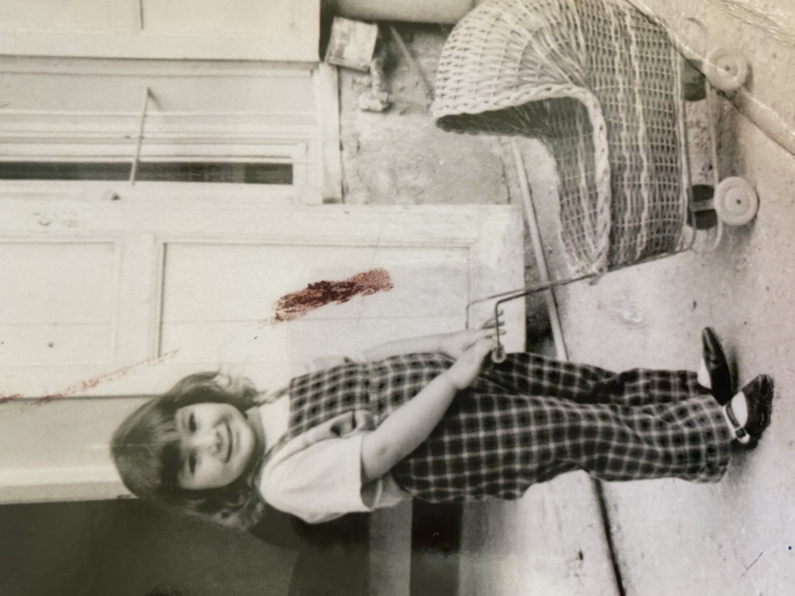
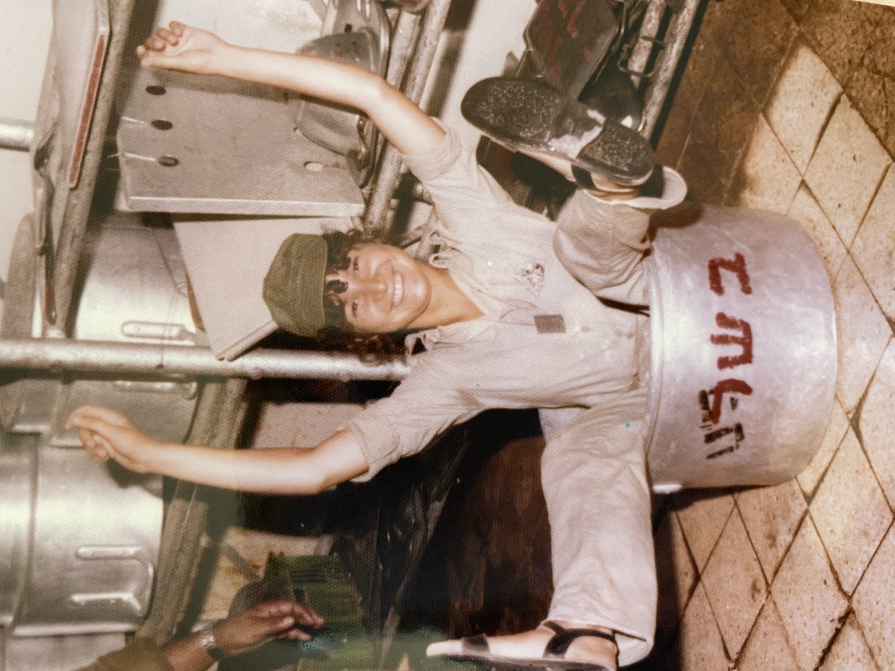

My Photos
 
My name is Orly Abisdris and I was born in Haifa in 1960. I have three
brothers, one sister and two daughters.
I serverd in the army in the human resources office of "Nahal" Brigade
in Sinai and after that as a head administrative in the institute of
physical therapy at a military convalescent home.
I have a bachelor's degree in sociology from Haifa University and a
Master's degree in Public Administration from BGU.
I worked for many years in the field of human resources in high-tech
companies and today I am working in Levinstein Hospital as a service
and patient experience manager.
I like to go for walks in nature, listen to good music, cook delicious food, hang out with family and friends and travel the world. My favorite place is the beach!
The "read-only" web
Millions of users
Connect information - The Web
Static connect - one way interaction
The "read-write" web
Billions of users
Connect people - Social Web (Blogging, Facebook, Twiter)
Two way communication & collaborative approach (Media sharing
Wikipedia, StackOverFlow, Youtube)
The "read-write-execute" web
Trillions of users
Connect knowledge - Web of DATA, Semantic web
Personalaized experience - using AI tools the web learns the user
and provides him relevant informatiom and reccomendations
The search will probably not return the ideal results for the user. In order to get better result the user should enter a specific URL. Most of the results are documents or defenitions from an encyclopedia.
The user has more tools that can help him find better results like Wikipedia and Youtube, tagging. In addition to documents, there are different types of information like Facebook's posts, Bllogs, forums and video. We can see user's growing interaction with the web according to it's different versions.
Search engines have already improved and the user will be able to get much more relevant results thanks to AI algorithms. After this search the user will probably get some related sites, articles, videos, posts and future reccomandations containing smantic key words, like similar medication's side effects.